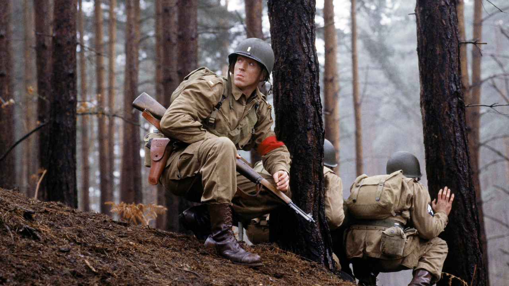
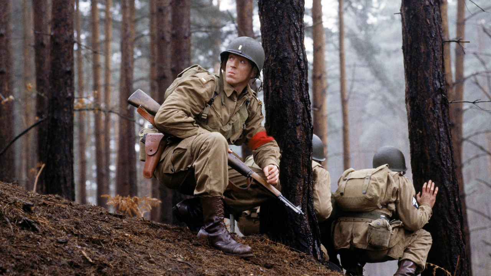
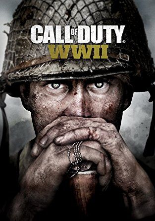

World War II In Popular Culture :
There is a wide range of ways in which people have represented World War II in popular culture.
Many works were created during the years of conflict and many more have arisen from that period of world history.
Some well-known examples of books about the war, like Nobel laureate Kenzaburō Ōe's Okinawa Notes, could only have been
crafted in retrospect.
During World War II, the relations between art and war can be articulated around two main issues.
First, art (and, more generally, culture) found itself at the centre of an ideological war.
Second, during World War II, many artists found themselves in the most difficult conditions (in an occupied country,
in internment camps, in death camps) and their works are a testimony to a powerful “urge to create.” Such creative impulse can
be interpreted as the expression of self-preservation, a survival instinct in critical times.
The war also figures prominently in many thousands of novels and other works of literature, including many published in the
1990s and 2000s.
The Book Thief (2005), by Markus Zusak
The Diary of a Young Girl (1944), by Anne Frank
The Big War (1957), by Anton Myrer
Social historians regard the works of popular culture from the World War II era as documents that mirror and define crucial
issues and concerns during that time. Individual combatants and those on the home fronts during World War II experienced the
war through newspaper reports, radio broadcasts, films, stage plays, books and popular music—all become noteworthy aspects of
understanding the period and its impact on what happened afterward.
World War II has provided material for many films, television programmes and books, beginning during the war. The film aspect
had reached its peak by the 1960s, with films such as The Longest Day (which had been adapted from a book), The Great Escape,
Patton and Battle of Britain. In the UK the actor Sir John Mills became particularly associated with war dramas, such as The
Colditz Story (1954), Above Us the Waves (1955) and Ice Cold in Alex (1958), and was seen as the personification of Britain at
war, conveying heroism and humility.
-
- Band Of Brothers (2001)
- The story of Easy Company of the U.S. Army 101st Airborne Division, and their mission in World War II Europe, from Operation Overlord, through V-J Day.
 

-
- Apocalypse: The Second World War (2009)
- Apocalypse: The Second World War(2009) is a six-part French documentary about the Second World War. The documentary is composed exclusively of actual footage of the war as filmed by war correspondents, soldiers, resistance fighters and private citizens.
-
- Schindler's List (1993)
- TIn German-occupied Poland during World War II, Oskar Schindler gradually becomes concerned for his Jewish workforce after witnessing their persecution by the Nazi Germans.
-
- Saving Private Ryan (1998)
- Following the Normandy Landings, a group of U.S. soldiers go behind enemy lines to retrieve a paratrooper whose brothers have been killed in action.
-
- Dunkirk (2017)
- Allied soldiers from Belgium, the British Empire and France are surrounded by the German Army, and evacuated during a fierce battle in World War II.
Through the history of video and PC gaming, nearly every battle, skirmish, and secret operation that took place during
World War II has been recreated in a video game one way or another. While some World War II games try to stay true to the
historical facts and records, others have taken some liberties and adjusted history to fit into new, fantastic storylines that
feature everything from the paranormal to aliens and even zombies.
-
- Call Of Duty WW II
- The game's campaign is set in the European theatre, and is centered around a squad in the 1st Infantry
Division, following their battles on the Western Front, and set mainly in the historical events of Operation
Overlord.
 
-
- Company of Heroes 2: Ardennes Assault
- Company of Heroes 2 – despite capturing the horror of winter warfare – didn’t quite hit the same high notes as
its venerable predecessor. But with the standalone expansion of Ardennes Assault, Relic reinvigorated the
single-player portion of the series, giving it one of its most interesting campaigns.